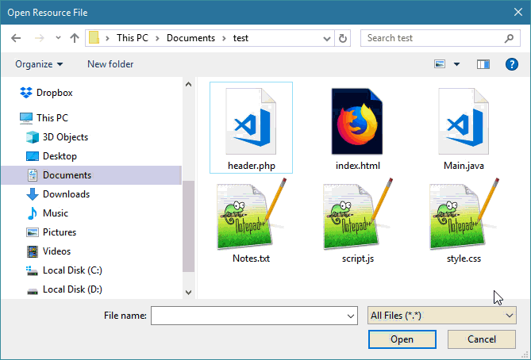
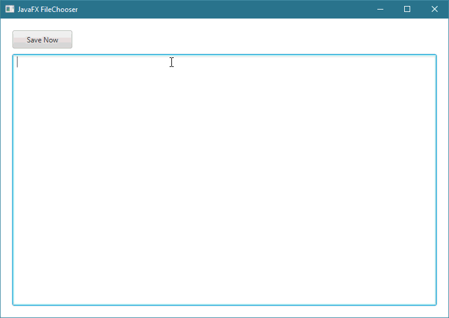

JavaFXالكلاس FileChooser
مقدمة
الكلاس FileChooser يستخدم للحصول على نافذة جاهزة و مخصصة لجعل المستخدم قادر على فتح ملفات موجودة على حاسوبه مباشرةً من تطبيقه و يتيح له أيضاً إظهار نافذة تساعده في تحديد المكان الذي يريد أن يحفظ فيه ملفاته.
بناء الكلاس FileChooser
public final class FileChooser
extends Object
ملاحظة: الكلاس FileChooser تابع للحزمة javafx.stage و ليس للحزمة javafx.scene.controls كما هو حال باقي العناصر التي شرحناها سابقاً.
لكننا أضفناه في قسم "عناصر واجهة المستخدم" هنا لأنه يعتبر من العناصر المهمة في JavaFX حيث يتيح لك التعامل مباشرةً مع الملفات الموجودة على جهاز المستخدم.
طريقة التعامل معه
إفتراضياً الـ FileChooser يتيح للمستخدم اختيار و رؤية أي نوع من الملفات الموجودة على جهازه مهما كان نوعها ( MP4 - MP3 - JPG - PNG - TXT الخ.. ) لكنك تستطيع إجبار المستخدم على اختيار أو حفظ أنواع محددة من الملفات من خلال إضافة فلاتر تضيفها على كائن FileChooser. و يمكنك جعل المستخدم قادر على فتح ملف واحد أو فتح عدة ملفات في وقت واحد.
لجعل كائن الـ FileChooser يظهر نافذة خاصة لجعل المستخدم يختار الملف الذي يريد فتحه من التطبيق, قم باستدعاء الدالة الـ showOpenDialog().
لجعل كائن الـ FileChooser يظهر نافذة خاصة لجعل المستخدم يختار الملفات التي يريد فتحها من التطبيق, قم باستدعاء الدالة الـ showOpenMultipleDialog().
لجعل كائن الـ FileChooser يظهر نافذة خاصة لجعل المستخدم يختار الملف الذي يريد فته من التطبيق, قم باستدعاء الدالة الـ showSaveDialog().
كونستركتورات الكلاس FileChooser
الجدول التالي يحتوي كونستركتورات الكلاس FileChooser.
| الكونستركتور مع تعريفه |
public FileChooser()
ينشئ كائن من الكلاس FileChooser يمثل نافذة جاهزة و مخصصة تتيح للمستخدم فتح أو حفظ أي نوع من الملفات. |
دوال الكلاس FileChooser
الجدول التالي يحتوي على دوال الكلاس FileChooser الأكثر إستخداماً.
| الدالة مع تعريفها |
public final void setTitle(String value)
تستخدم لإضافة عنوان لكائن الـ FileChooser الذي قام باستدعائها.
مكان الباراميتر value نمرر نص يمثل العنوان الذي نريد وضعه للـ FileChooser. |
public File showOpenDialog(Window ownerWindow)
تظهر نافذة منبثقة أمام المستخدم تتيح له تحديد الملف الموجود على حاسوبه و الذي يريد أن يفتحه من التطبيق.
هذه النافذة تحتوي على زر Cancel و زر Open.
مكان الباراميتر ownerWindow نمرر كائن يمثل نافذة التطبيق الحالية التي نريدها أن تنتظر ريثما يقوم المستخدم بإختيار ملف.
أو نضع القيمة null لجعل المستخدم قادر على التعامل مع النافذة المنبثقة و نافذة التطبيق في وقت واحد.
عند إغلاق النافذة المنبثقة فإنها ترجع كائن من الكلاس File يمثل الملف الذي قام المستخدم بتحديده عندما قام بالنقر على الزر Open.
أو ترجع null في حال قام بإغلاق النافذة بدون أن يختار أي ملف. |
public List<File> showOpenMultipleDialog(Window ownerWindow)
تظهر نافذة منبثقة أمام المستخدم تتيح له تحديد الملف الموجودة على حاسوبه و التي يريد أن يفتحها ليراها فقط من التطبيق.
هذه النافذة تحتوي على زر Cancel و زر Open.
مكان الباراميتر ownerWindow نمرر كائن يمثل نافذة التطبيق الحالية التي نريدها أن تنتظر ريثما يقوم المستخدم بإختيار ملف.
أو نضع القيمة null لجعل المستخدم قادر على التعامل مع النافذة المنبثقة و نافذة التطبيق في وقت واحد.
عند إغلاق النافذة المنبثقة فإنها ترجع كائن من الكلاس List يحتوي على مجموعة كائنات من الكلاس File تمثل الملفات التي قام المستخدم بتحديدها عندما قام بالنقر على الزر Open.
أو ترجع null في حال قام بإغلاق النافذة بدون أن يختار أي ملف.
ترمي الإستثناء UnsupportedOperationException في حال إجراء أي تعديل على ملف موجود في ضمن مجموعة الملفات التي تم إرجاعها. |
public File showSaveDialog(Window ownerWindow)
تظهر نافذة منبثقة أمام المستخدم تتيح له تحديد مسار و إسم الملف الذي يريد حفظه على حاسوبه.
هذه النافذة تحتوي على زر Cancel و زر Save.
مكان الباراميتر ownerWindow نمرر كائن يمثل نافذة التطبيق الحالية التي نريدها أن تنتظر ريثما يقوم المستخدم بتحديد مسار الملف و إسمه.
أو نضع القيمة null لجعل المستخدم قادر على التعامل مع النافذة المنبثقة و نافذة التطبيق في وقت واحد.
عند إغلاق النافذة المنبثقة فإنها ترجع كائن من الكلاس File يمثل مسار الملف الذي قام المستخدم بحفظه عندما قام النقر على الزر Save.
أو ترجع null في حال قام بإغلاق النافذة و لم يحفظ الملف. |
public ObservableList<FileChooser.ExtensionFilter> getExtensionFilters()
تستخدم لتحديد إمتداد الملفات ( Files Extension ) التي يستطيع المستخدم إختيارها, أي لإضافة الفلاتر.
فعلياً, هذه الدالة ترجع لك كائن الـ ObservableList الذي يمثل لائحة الفلاتر الخاصة بالكائن FileChooser الذي قام باستدعائها و التي يمكنك من خلالها إضافة فلاتر جديدة.
ملاحظة: أول فلتر تضيفه فيها, يظهر مختاراً بشكل إفتراضي عند إظهار الكائن FileChooser و طبعاً يستطيع المستخدم أن يختار الفيلتر الذي يريده من القائمة. |
أمثلة شاملة
المثال الأول
المثال التالي يعلمك طريقة إنشاء كائن من الكلاس FileChooser لإظهار File Chooser Dialog و معرفة إذا تم النقر على الزر Open أم لا.
شاهد المثال »
المثال الثاني
المثال التالي يعلمك طريقة تحديد نوع الملفات التي يمكنك للمستخدم إختيارها في الـ FileChooser.
في حال قام بإختيار النوع Text Files يمكنه فقط رؤية و إختيار الملفات التي نوعها txt.
في حال قام بإختيار النوع Java Files يمكنه فقط رؤية و إختيار الملفات التي نوعها java.
في حال قام بإختيار النوع Web Files يمكنه فقط رؤية و إختيار الملفات التي نوعها html أو css أو js أو php.
في حال قام بإختيار النوع All Files يمكنه رؤية و إختيار أي نوع من الملفات.

شاهد المثال »
المثال الثالث
المثال التالي يعلمك طريقة إظهار FileChooser عند النقر على Button.
بالإضافة إلى طريقة عرض محتوى الملف الذي إختياره المستخدم بواسطة FileChooser في TextArea.

شاهد المثال »
المثال الرابع
المثال التالي يعلمك طريقة جعل المستخدم قادر على تحديد المكان الذي يريد أن يحفظ فيه الملف بواسطة FileChooser.

شاهد المثال »

 محرر الويب
محرر الويب نظام الألوان
نظام الألوان محول الوحدات
محول الوحدات محلل عناوين الشبكات
محلل عناوين الشبكات